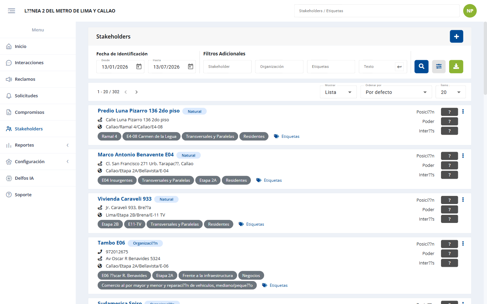
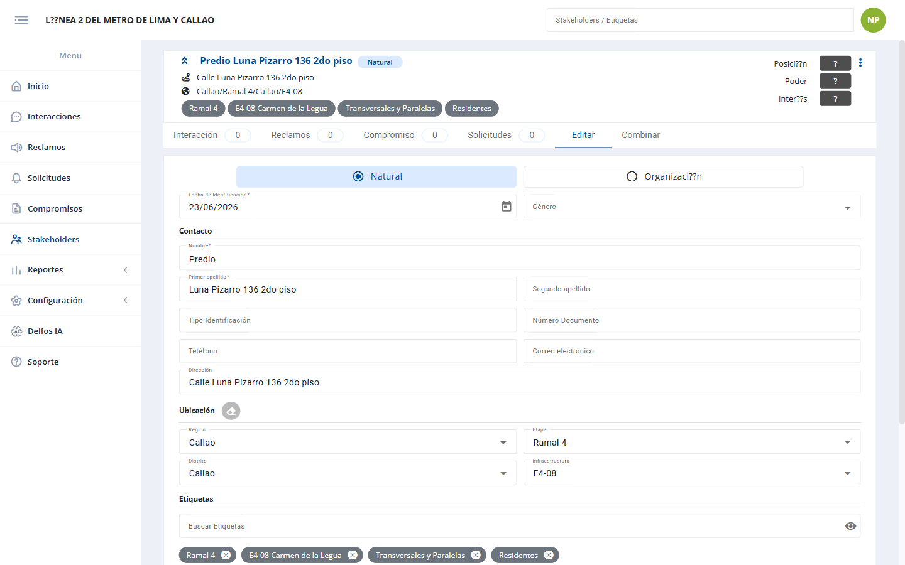
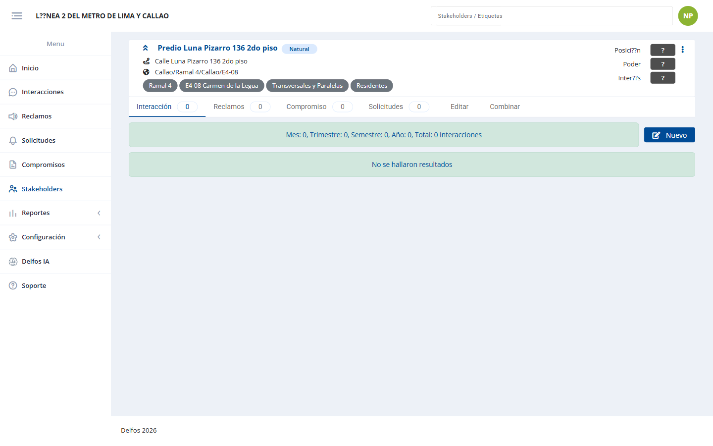
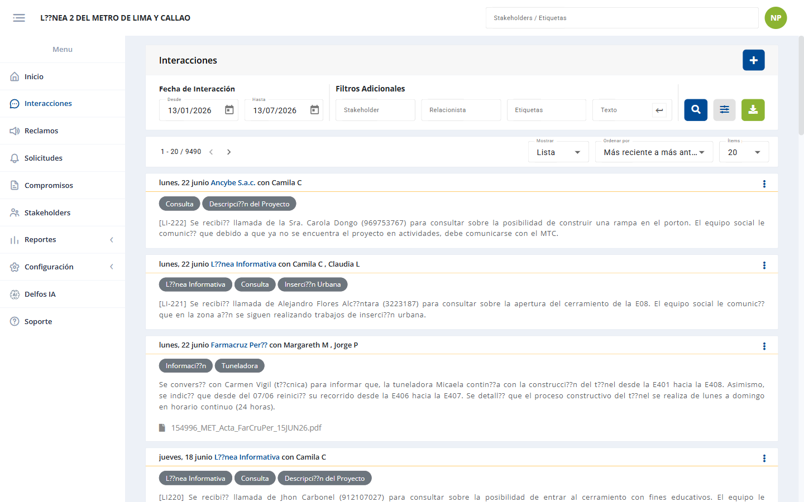
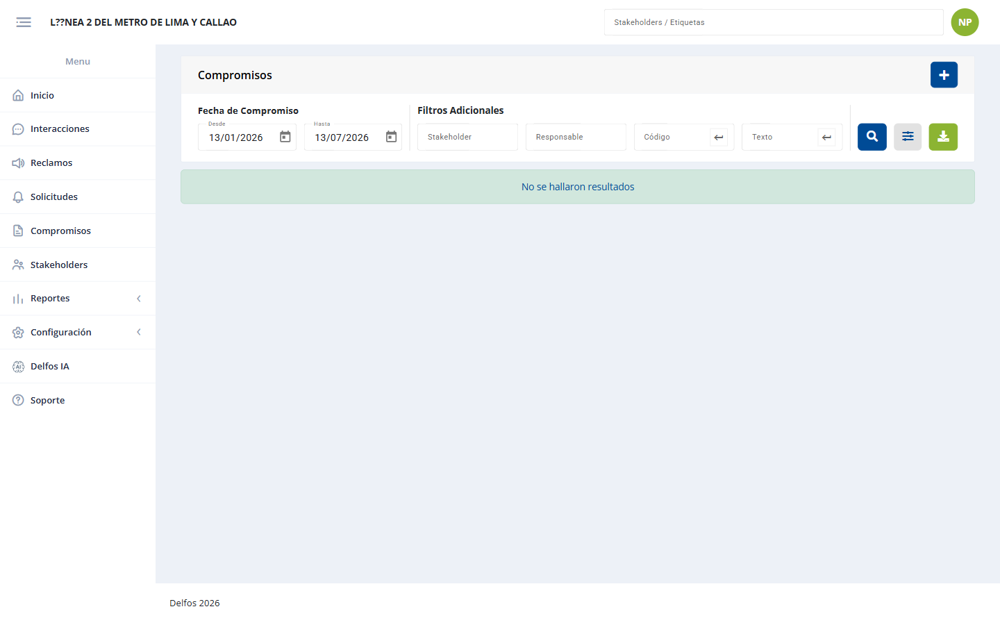
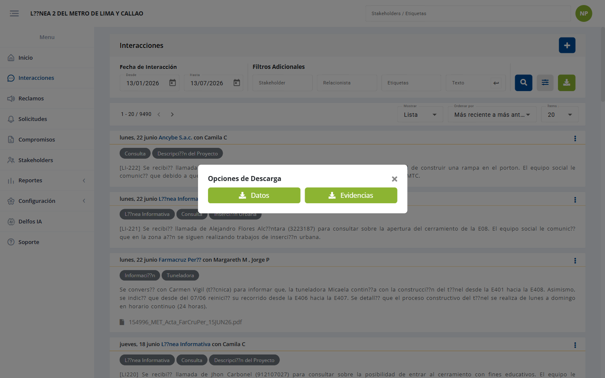
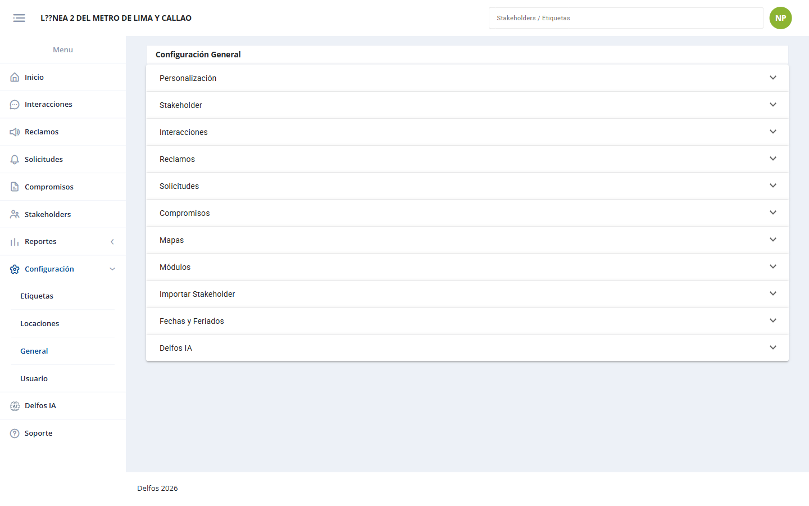

Documentación Funcional del Sistema Delfos
Toda la funcionalidad del backend tal como la exponen sus controladores, cruzada con los servicios que implementan la lógica de negocio y con capturas reales de las pantallas que consumen cada endpoint.
Introducción
Qué contiene este documento y de dónde sale
Mapa de rutas real (php artisan route:list) cruzado con los controladores de app/Http/Controllers/ y los servicios de app/Services/, más un recorrido en vivo de la aplicación en el proyecto "Línea 2 del Metro de Lima y Callao" con rol Administrador.
Cómo leer las tablas
Cada módulo se documenta con una tabla de endpoints y, cuando aporta, con un bloque de servicios que indica qué clases implementan la lógica.
| Columna | Significado |
|---|---|
| Método | GET consultar · POST crear/editar/acciones · DELETE eliminar |
| Ruta | Path relativo a la base de la API. Los {parámetro} son valores en la URL (p. ej. {idsh} = id del stakeholder). |
| Acción | Método del controlador que atiende la ruta. |
| Descripción | Qué hace de cara al usuario. |
Mapa de módulos
Convenciones de rutas
Los sufijos se repiten en todo el sistema: aprenderlos permite leer cualquier módulo
| Patrón | Qué hace |
|---|---|
.../listar | Lista paginada y filtrable de registros. |
.../listar-init | Datos iniciales de la pantalla de listado (catálogos, filtros, opciones de dropdown). |
.../listar-mapa | Igual que listar, pero con geometría/coordenadas para la vista de mapa. |
.../ver/{id} | Detalle completo de un registro. |
.../crear | Crea un registro nuevo. |
.../crear-init | Datos iniciales del formulario de creación (catálogos, valores por defecto). |
.../editar | Actualiza un registro existente. |
.../eliminar/{id} | Elimina un registro (baja lógica). |
.../reordenar | Cambia el orden de los ítems de un catálogo (drag & drop). |
.../exportar | Exporta a Excel/PDF de forma síncrona. |
.../exportar/iniciar.../exportar/{id}/status.../exportar/{id}/download | Exportación asíncrona para volúmenes grandes: se inicia un trabajo, se consulta su estado y se descarga al terminar. |
.../archivo-exportar | Exporta las evidencias (archivos adjuntos) del módulo. |
.../proceso/{id} | Línea de tiempo del registro: trazabilidad de sus estados. |
.../informe | Genera un informe imprimible en PDF. |
.../qc | Marca de control de calidad (Quality Check). |
.../ficha/{id} | Ficha: hoja de resumen 360° de una entidad. |
dropdown/... | Listas ligeras para selectores de formularios. |
Seguridad y contexto
Reglas transversales que aplican a todos los módulos
Autenticación
Salvo el bloque de acceso (/auth/init, /auth/login, /auth/oauth, /recover*, /oauth/url), todos los endpoints exigen JWT, transportado en una cookie HttpOnly llamada token_delfos. Cada petición atraviesa esta cadena de middlewares:
valida el token
permiso del rol
auditoría
Además hay middlewares globales: SecureHeaders (cabeceras de seguridad y CSP), MaintenanceMiddleware (modo mantenimiento) y VerifyCsrfOrigin (valida Origin/Referer contra la allowlist de CORS en peticiones que cambian estado).
Multi-tenant
Autorización por registro
En interacciones, reclamos, solicitudes y compromisos, un usuario de rol básico sólo puede editar o eliminar lo que él creó (o donde figura como relacionista asignado). Administradores y supervisores no tienen esa restricción. La lectura dentro del proyecto es abierta: la regla de negocio es "ver todo el proyecto, editar sólo lo propio". En stakeholders el CRUD es compartido.
Protección del acceso
login, oauth, recover y recover/password tienen rate limiting por IP y usuario. El login añade reCAPTCHA y un bloqueo temporal con backoff exponencial tras varios intentos fallidos.
Módulos activables
metro2, Predios y Delfos IA están deshabilitados: sus rutas de frontend redirigen a Inicio aunque los endpoints existan en la API. Por eso esos dos módulos se documentan pero no tienen captura.Conceptos clave
El modelo mental de Delfos
Todo gira en torno al Stakeholder. A él se asocian cuatro tipos de gestión: interacción, reclamo, solicitud y compromiso.
C-XXXX y un ciclo de estados hasta su cierre.Acceso y cuenta
Autenticación, recuperación, OAuth, perfil, notificaciones y sesiones

/auth/login/{proyecto}). Ingreso con usuario y contraseña, acceso con Outlook y Google, y enlace de recuperación. Protegida por reCAPTCHA.Autenticación — AuthController
| Método | Ruta | Acción | Descripción |
|---|---|---|---|
| GET | /auth/init | init | Datos iniciales de la pantalla de login (nombre y logo del proyecto, proveedores OAuth habilitados). Público. |
| POST | /auth/login | login | Inicia sesión con usuario/contraseña. Valida reCAPTCHA, aplica bloqueo temporal por intentos fallidos, registra bitácora y emite el JWT en cookie HttpOnly. |
| POST | /auth/oauth | oauth | Inicia sesión con un proveedor externo (Google/Outlook) a partir del código devuelto por el proveedor. |
| GET | /auth/me | me | Devuelve los datos del usuario autenticado; restaura la sesión desde la cookie al recargar el navegador. |
Auth\AuthService (validación de proyecto, credenciales, bitácora), Auth\LoginLockout (bloqueo con backoff), Oauth\GoogleOauthService, Oauth\OutlookOauthService, General\MailerService. Helpers: DelfosEncryption (firma JWT), JwtCookie.
Recuperación de contraseña — RecoverController
| Método | Ruta | Acción | Descripción |
|---|---|---|---|
| POST | /recover | solicitar | Solicita el restablecimiento: valida reCAPTCHA, genera un token de un solo uso y envía el correo con el enlace. |
| POST | /recover/password | passwordCambiar | Fija la nueva contraseña validando el token (un solo uso, con caducidad). |
Conexiones OAuth — OauthController
| Método | Ruta | Acción | Descripción |
|---|---|---|---|
| GET | /oauth/url | servicioUrl | Devuelve la URL de autorización del proveedor para iniciar la conexión. |
| POST | /oauth/conectar | servicioConectar | Completa la conexión de la cuenta externa (Google/Outlook) con el usuario Delfos. |
| DELETE | /oauth/desconectar/{idconexion} | servicioDesconectar | Desvincula la cuenta externa. |
Perfil — PerfilController
| Método | Ruta | Acción | Descripción |
|---|---|---|---|
| GET | /perfil | init | Datos del perfil del usuario en sesión. |
| GET | /perfil/formulario-init | formularioInit | Catálogos para el formulario de edición del perfil. |
| POST | /perfil/actualizar | actualizar | Actualiza los datos personales del usuario. |
| POST | /perfil/password-editar | passwordEditar | Cambia la contraseña propia. |
| POST | /perfil/logout | logout | Cierra la sesión actual (invalida la cookie). |
| POST | /perfil/logout-all | logoutTodos | Cierra todas las sesiones del usuario en cualquier dispositivo. |
Notificaciones y sesiones
| Método | Ruta | Acción | Descripción |
|---|---|---|---|
| GET | /perfil/notificaciones/init | init | Preferencias de notificación (qué avisos por correo desea recibir). |
| POST | /perfil/notificaciones/editar | editar | Guarda esas preferencias. |
| GET | /perfil/sesion/listar | sesionListar | Lista los inicios de sesión (dispositivo, fecha, IP) para detectar accesos no reconocidos. |
Boletín
BoletinController — avisos al ingresar
Comunicados y novedades de versión que el sistema muestra al usuario al entrar.
| Método | Ruta | Acción | Descripción |
|---|---|---|---|
| GET | /boletin/init | boletinInit | Devuelve el boletín pendiente de ver, si lo hay. |
| POST | /boletin/visto | boletinVisto | Marca el boletín como leído para no volver a mostrarlo. |
Stakeholders
La entidad central: directorio, ficha 360°, evaluación e importación
DashboardInicioController.


?tab=1): Interacción, Reclamos, Compromiso, Solicitudes, Editar y Combinar.Gestión de stakeholders — StakeholderController (21 endpoints)
| Método | Ruta | Acción | Descripción |
|---|---|---|---|
| GET | /stakeholder/listar | stakeholderListar | Listado paginado y filtrable del directorio. |
| GET | /stakeholder/listar-init | stakeholderListarInit | Catálogos y filtros de la pantalla de listado. |
| GET | /stakeholder/listar-mapa | stakeholderListar | Igual que listar pero con geometría, para pintarlos en el mapa. |
| GET | /stakeholder/ver/{idsh} | stakeholderVer | Detalle de un stakeholder. |
| GET | /stakeholder/ficha/{idsh} | stakeholderFicha | Ficha 360°: datos + historial completo de gestión asociado. |
| GET | /stakeholder/ficha-mapa/{idsh} | stakeholderFichaMapa | Ubicación del stakeholder para el mapa de la ficha. |
| GET | /stakeholder/crear-init | stakeholderCrearInit | Catálogos del formulario de alta (tipos, organización, ubigeo, etiquetas). |
| POST | /stakeholder/crear | stakeholderCrear | Registra un stakeholder nuevo. |
| POST | /stakeholder/editar | stakeholderEditar | Actualiza sus datos. |
| POST | /stakeholder/editar-tags | stakeholderEditarTags | Cambia sólo las etiquetas asignadas. |
| POST | /stakeholder/documentos-adjuntos | stakeholderAdjuntos | Sube documentos adjuntos del stakeholder. |
| DELETE | /stakeholder/eliminar/{idsh} | stakeholderEliminar | Elimina el stakeholder. |
| POST | /stakeholder/merge | stakeholderMerge | Combina duplicados: fusiona dos fichas conservando el historial de ambas. |
| GET | /stakeholder/informe | stakeholderInforme | Informe PDF consolidado. |
| GET | /stakeholder/exportar | stakeholderExportar | Exporta el listado a Excel (síncrono). |
| POST | /stakeholder/exportar/iniciar | stakeholderExportarIniciar | Inicia la exportación asíncrona (volúmenes grandes). |
| GET | /stakeholder/exportar/{exportId}/status | stakeholderExportarStatus | Consulta el avance de esa exportación. |
| GET | /stakeholder/exportar/{exportId}/download | stakeholderExportarDownload | Descarga el archivo cuando está listo. |
| GET | /dropdown/stakeholder | stakeholderDropdown | Selector de stakeholders para formularios. |
| GET | /dropdown/stakeholder-natural | stakeholderNaturalDropdown | Selector filtrado a personas naturales. |
| GET | /dropdown/stakeholder-organizacion | stakeholderOrganizacionDropdown | Selector filtrado a organizaciones. |
Stakeholder\StakeholderService (CRUD y merge), StakeholderListarService, StakeholderExportacionService, Export\AsyncExport. La ficha agrega datos de InteraccionListarService, ReclamoListarService, SolicitudListarService, CompromisoListarService y CompromisoxListarService.
Evaluación de stakeholders — StakeholderEvaluacionController
Posiciona a cada stakeholder frente al proyecto según variables configurables (poder, interés, postura…). Las variables y categorías se definen en Configuración.
| Método | Ruta | Acción | Descripción |
|---|---|---|---|
| GET | /stakeholder/evaluacion | init | Datos iniciales del módulo de evaluación. |
| GET | /stakeholder/evaluacion/listar | evaluacionListar | Lista de evaluaciones realizadas. |
| POST | /stakeholder/evaluacion/crear | evaluacionCrear | Registra una evaluación. |
| POST | /stakeholder/evaluacion/editar | evaluacionEditar | Modifica una evaluación existente. |
| DELETE | /stakeholder/evaluacion/eliminar/{id} | evaluacionEliminar | Elimina la evaluación. |
| GET | /stakeholder/evaluacion/exportar | evaluacionExportar | Exporta las evaluaciones a Excel. |
| POST | /stakeholder/evaluacion/exportar/iniciar | evaluacionExportarIniciar | Exportación asíncrona de evaluaciones. |
| GET | /stakeholder/evaluacion/exportar/{id}/status | evaluacionExportarStatus | Estado de esa exportación. |
| GET | /stakeholder/evaluacion/exportar/{id}/download | evaluacionExportarDownload | Descarga del archivo. |
Importación masiva — ImportacionShController
verificar valida el archivo y devuelve los errores fila a fila sin grabar nada; sólo entonces ejecutar confirma la inserción. Así no entran datos inválidos.| Método | Ruta | Acción | Descripción |
|---|---|---|---|
| GET | /importacion/stakeholder/guia | guia | Guía (PDF) de cómo preparar el archivo de carga. |
| GET | /importacion/stakeholder/formato | formato | Descarga la plantilla Excel a rellenar. |
| POST | /importacion/stakeholder/verificar | verificar | Sube el archivo y valida su contenido sin grabar: devuelve los errores fila a fila. |
| POST | /importacion/stakeholder/ejecutar | ejecutar | Confirma la carga masiva e inserta los stakeholders. |
Relacionistas — RelacionistaController
| Método | Ruta | Acción | Descripción |
|---|---|---|---|
| GET | /dropdown/relacionista | relacionistaDropdown | Selector de relacionistas (usuarios que gestionan la relación con el stakeholder). |
Predios
Predios/inmuebles y su vínculo con stakeholders
metro2: no aparece en el menú y su ruta redirige a Inicio. Los endpoints existen y se documentan igualmente; se activa desde Configuración → Módulos.Predios — PredioController (13 endpoints)
| Método | Ruta | Acción | Descripción |
|---|---|---|---|
| GET | /predio/listar | predioListar | Listado paginado de predios. |
| GET | /predio/listar-init | predioListarInit | Catálogos y filtros del listado. |
| GET | /predio/listar-mapa | predioListar | Listado con geometría para el mapa. |
| GET | /predio/ver/{idpredio} | predioVer | Detalle del predio. |
| GET | /predio/ver-codigo/{codigo} | predioVerCodigo | Busca el predio por su código (útil al leer fichas físicas). |
| GET | /predio/ficha/{idpredio} | predioFicha | Ficha del predio con su historial. |
| GET | /predio/crear-init | predioCrearInit | Catálogos del alta (uso, condición de propiedad). |
| POST | /predio/crear | predioCrear | Registra un predio. |
| POST | /predio/editar | predioEditar | Actualiza el predio. |
| DELETE | /predio/eliminar/{idpredio} | predioEliminar | Elimina el predio. |
| GET | /predio/stakeholders | predioStakeholders | Stakeholders vinculados a predios. |
| GET | /predio/exportar | predioExportar | Exporta el listado a Excel. |
| GET | /dropdown/predio | predioDropdown | Selector de predios para formularios. |
Códigos y stakeholders del predio
| Método | Ruta | Acción | Descripción |
|---|---|---|---|
| GET | /predio/codigo/listar | predioCodigoListar | Códigos asociados a un predio (puede tener varios). |
| POST | /predio/codigo/crear | predioCodigoCrear | Añade un código. |
| DELETE | /predio/codigo/eliminar/{idcodigo} | predioCodigoEliminar | Quita un código. |
| POST | /predio/stakeholder/crear | shPredioCrear | Vincula un stakeholder al predio (con su parentesco/condición). |
| POST | /predio/stakeholder/editar | shPredioEditar | Modifica ese vínculo. |
| DELETE | /predio/stakeholder/eliminar/{id} | shPredioEliminar | Elimina el vínculo. |
Interacciones
Todo contacto con un stakeholder: reunión, llamada, visita o correo

Interacciones — InteraccionController (15 endpoints)
| Método | Ruta | Acción | Descripción |
|---|---|---|---|
| GET | /interaccion/listar | interaccionListar | Listado paginado y filtrable (fecha, stakeholder, relacionista, etiquetas, texto). |
| GET | /interaccion/listar-init | interaccionListarInit | Catálogos y filtros de la pantalla. |
| GET | /interaccion/listar-mapa | interaccionListar | Listado con geometría para el mapa. |
| GET | /interaccion/ver/{idinteraccion} | interaccionVer | Detalle de la interacción. |
| GET | /interaccion/crear-init | interaccionCrearInit | Catálogos del formulario (tipo, canal, prioridad, duración, etiquetas). |
| POST | /interaccion/crear | interaccionCrear | Registra una interacción, con adjuntos. |
| POST | /interaccion/editar | interaccionEditar | Actualiza la interacción. |
| DELETE | /interaccion/eliminar/{idinteraccion} | interaccionEliminar | Elimina la interacción. |
| POST | /interaccion/generar-crear-ia | interaccionGenerarCrearIa | Asistencia IA: redacta la descripción de la interacción a partir de notas. |
| POST | /interaccion/qc | interaccionQc | Marca de control de calidad sobre el registro. |
| GET | /interaccion/exportar | interaccionExportar | Exporta el listado a Excel (síncrono). |
| POST | /interaccion/exportar/iniciar | interaccionExportarIniciar | Inicia la exportación asíncrona. |
| GET | /interaccion/exportar/{id}/status | interaccionExportarStatus | Estado de la exportación. |
| GET | /interaccion/exportar/{id}/download | interaccionExportarDownload | Descarga el archivo. |
| GET | /interaccion/archivo-exportar | interaccionArchivoExportar | Exporta las evidencias (adjuntos) del periodo filtrado. |
Interaccion\InteraccionService, InteraccionListarService, InteraccionExportacionService, Export\AsyncExport, PromptDelfosIaService (redacción asistida).
Comentarios — InteraccionComentarioController
| Método | Ruta | Acción | Descripción |
|---|---|---|---|
| GET | /interaccion/comentario/listar | comentarioListar | Comentarios de seguimiento de una interacción. |
| GET | /interaccion/comentario/ver/{id} | comentarioVer | Detalle de un comentario. |
| POST | /interaccion/comentario/crear | comentarioCrear | Añade un comentario. |
| POST | /interaccion/comentario/editar | comentarioEditar | Edita el comentario. |
| DELETE | /interaccion/comentario/eliminar/{id} | comentarioEliminar | Elimina el comentario. |
Reclamos
Quejas formales (código C-XXXX) con ciclo de estados
Reclamo — ReclamoController (16 endpoints)
| Método | Ruta | Acción | Descripción |
|---|---|---|---|
| GET | /reclamo/listar | reclamoListar | Listado paginado y filtrable de reclamos. |
| GET | /reclamo/listar-init | reclamoListarInit | Catálogos y filtros. |
| GET | /reclamo/listar-mapa | reclamoListar | Listado con geometría para el mapa. |
| GET | /reclamo/ver/{idreclamo} | reclamoVer | Detalle del reclamo. |
| GET | /reclamo/proceso/{idreclamo} | reclamoProceso | Línea de tiempo: en qué etapa está y qué se hizo en cada una. |
| GET | /reclamo/crear-init | reclamoCrearInit | Catálogos del alta (tipo, canal, etiquetas). |
| POST | /reclamo/crear | reclamoCrear | Registra el reclamo. |
| POST | /reclamo/editar | reclamoEditar | Actualiza el reclamo. |
| DELETE | /reclamo/eliminar/{idreclamo} | reclamoEliminar | Elimina el reclamo. |
| POST | /reclamo/qc | reclamoQc | Marca de control de calidad. |
| GET | /reclamo/informe | reclamoInforme | Informe PDF del reclamo. |
| GET | /reclamo/exportar | reclamoExportar | Exporta el listado a Excel. |
| POST | /reclamo/exportar/iniciar | reclamoExportarIniciar | Exportación asíncrona. |
| GET | /reclamo/exportar/{id}/status | reclamoExportarStatus | Estado de la exportación. |
| GET | /reclamo/exportar/{id}/download | reclamoExportarDownload | Descarga del archivo. |
| GET | /reclamo/archivo-exportar | reclamoArchivoExportar | Exporta las evidencias adjuntas. |
Ciclo del reclamo (sub-módulos)
Cada etapa es un sub-módulo con el mismo patrón CRUD (crear / editar / eliminar/{id} / ver/{id}, más crear-init cuando el formulario necesita catálogos):
| Etapa | Controlador | Rutas | Qué registra |
|---|---|---|---|
| Evaluación | ReclamoEvaluacionController | /reclamo/evaluacion/* | El análisis de procedencia del reclamo. |
| Propuesta | ReclamoPropuestaController | /reclamo/propuesta/* | La propuesta de solución ofrecida. |
| Respuesta | ReclamoRespuestaController | /reclamo/respuesta/* | La respuesta formal comunicada al reclamante. |
| Apelación | ReclamoApelacionController | /reclamo/apelacion/* | La apelación, si el stakeholder no acepta la respuesta. |
| Cierre | ReclamoCerradoController | /reclamo/cerrado/* | El cierre: con acuerdo cumplido, sin acuerdo, desestimado o derivado. |
Solicitudes
Pedidos y requerimientos que no son quejas. Internamente, "monitoreo"
{idmonitoreo} y no {idsolicitud}.Solicitud — SolicitudController (16 endpoints)
| Método | Ruta | Acción | Descripción |
|---|---|---|---|
| GET | /solicitud/listar | solicitudListar | Listado paginado y filtrable. |
| GET | /solicitud/listar-init | solicitudListarInit | Catálogos y filtros. |
| GET | /solicitud/listar-mapa | solicitudListar | Listado con geometría para el mapa. |
| GET | /solicitud/ver/{idmonitoreo} | solicitudVer | Detalle de la solicitud. |
| GET | /solicitud/proceso/{idmonitoreo} | solicitudProceso | Línea de tiempo de la solicitud. |
| GET | /solicitud/crear-init | SolicitudCrearInit | Catálogos del alta (tipo, canal). |
| POST | /solicitud/crear | solicitudCrear | Registra la solicitud. |
| POST | /solicitud/editar | solicitudEditar | Actualiza la solicitud. |
| DELETE | /solicitud/eliminar/{idmonitoreo} | solicitudEliminar | Elimina la solicitud. |
| POST | /solicitud/qc | solicitudQc | Marca de control de calidad. |
| GET | /solicitud/informe | solicitudInforme | Informe PDF. |
| GET | /solicitud/exportar | solicitudExportar | Exporta el listado a Excel. |
| POST | /solicitud/exportar/iniciar | solicitudExportarIniciar | Exportación asíncrona. |
| GET | /solicitud/exportar/{id}/status | solicitudExportarStatus | Estado de la exportación. |
| GET | /solicitud/exportar/{id}/download | solicitudExportarDownload | Descarga del archivo. |
| GET | /solicitud/archivo-exportar | solicitudArchivoExportar | Exporta las evidencias adjuntas. |
Ciclo de la solicitud (sub-módulos)
| Etapa | Controlador | Rutas | Qué registra |
|---|---|---|---|
| Evaluación | SolicitudEvaluacionController | /solicitud/evaluacion/* | El análisis de la solicitud. |
| Propuesta | SolicitudPropuestaController | /solicitud/propuesta/* | La propuesta de atención. |
| Revisión | SolicitudRevisionController | /solicitud/revision/* | La revisión interna de esa propuesta. |
| Aprobación | SolicitudAprobadoController | /solicitud/aprobado/* | La aprobación de lo propuesto. |
| Cierre | SolicitudCerradoController | /solicitud/cerrado/* | El cierre de la solicitud. |
Compromisos
Acuerdos con los stakeholders, descompuestos en entregables
/pages/gestion/commitment).Compromiso — CompromisoController (14 endpoints)
| Método | Ruta | Acción | Descripción |
|---|---|---|---|
| GET | /compromiso/listar | compromisoListar | Listado paginado y filtrable. |
| GET | /compromiso/listar-init | compromisoListarInit | Catálogos y filtros. |
| GET | /compromiso/listar-mapa | compromisoListar | Listado con geometría para el mapa. |
| GET | /compromiso/ver/{idcompromiso} | compromisoVer | Detalle del compromiso. |
| GET | /compromiso/crear-init | compromisoCrearInit | Catálogos del alta (categoría, fuente). |
| POST | /compromiso/crear | compromisoCrear | Registra el compromiso. |
| POST | /compromiso/editar | compromisoEditar | Actualiza el compromiso. |
| DELETE | /compromiso/eliminar/{idcompromiso} | compromisoEliminar | Elimina el compromiso. |
| POST | /compromiso/qc | compromisoQc | Marca de control de calidad. |
| GET | /compromiso/exportar | compromisoExportar | Exporta el listado a Excel. |
| POST | /compromiso/exportar/iniciar | compromisoExportarIniciar | Exportación asíncrona. |
| GET | /compromiso/exportar/{id}/status | compromisoExportarStatus | Estado de la exportación. |
| GET | /compromiso/exportar/{id}/download | compromisoExportarDownload | Descarga del archivo. |
| GET | /compromiso/archivo-exportar | compromisoArchivoExportar | Exporta las evidencias adjuntas. |
Entregables — EntregableController
| Método | Ruta | Acción | Descripción |
|---|---|---|---|
| GET | /compromiso/entregable | entregableCompromiso | Entregables de un compromiso dado. |
| GET | /compromiso/entregable/listar | entregableListar | Listado paginado de entregables. |
| GET | /compromiso/entregable/ver/{id} | entregableVer | Detalle del entregable. |
| GET | /compromiso/entregable/proceso/{id} | entregableProceso | Línea de tiempo del entregable. |
| GET | /compromiso/entregable/crear-init | entregableCrearInit | Catálogos del alta. |
| POST | /compromiso/entregable/crear | entregableCrear | Registra el entregable (acción concreta del compromiso). |
| POST | /compromiso/entregable/editar | entregableEditar | Actualiza el entregable. |
| DELETE | /compromiso/entregable/eliminar/{id} | entregableEliminar | Elimina el entregable. |
| GET | /compromiso/entregable/exportar | entregableExportar | Exporta los entregables a Excel. |
Etapas del entregable (sub-módulos)
| Etapa | Controlador | Rutas | Qué registra |
|---|---|---|---|
| Implementación | EntregableImplementacionController | /compromiso/implementacion/* | El avance de ejecución del entregable. |
| Cumplimiento | EntregableCumplimientoController | /compromiso/cumplimiento/* | La constancia de que el entregable se cumplió. |
| Ajuste | EntregableAjusteController | /compromiso/ajuste/* | Cambios de alcance o plazo del entregable. |
| Cancelación | EntregableCanceladoController | /compromiso/cancelado/* | La cancelación del entregable, con su motivo. |
Compromisos externos (Compromisox)
Obligaciones asumidas ante autoridades u otros terceros

/pages/gestion/compromiso)./pages/gestion/commitment muestra Compromisos (con entregables), mientras que /pages/gestion/compromiso muestra Compromisos externos. Es contraintuitivo.Compromisox — CompromisoxController (13 endpoints)
| Método | Ruta | Acción | Descripción |
|---|---|---|---|
| GET | /compromisox/listar | compromisoListar | Listado paginado y filtrable. |
| GET | /compromisox/listar-init | compromisoListarInit | Catálogos y filtros. |
| GET | /compromisox/listar-mapa | compromisoListar | Listado con geometría para el mapa. |
| GET | /compromisox/ver/{id} | compromisoVer | Detalle. |
| GET | /compromisox/proceso/{id} | compromisoProceso | Línea de tiempo. |
| GET | /compromisox/crear-init | compromisoCrearInit | Catálogos del alta. |
| POST | /compromisox/crear | compromisoCrear | Registra el compromiso externo. |
| POST | /compromisox/editar | compromisoEditar | Actualiza el registro. |
| DELETE | /compromisox/eliminar/{id} | compromisoEliminar | Elimina el registro. |
| POST | /compromisox/qc | compromisoQc | Marca de control de calidad. |
| GET | /compromisox/informe | compromisoInforme | Informe PDF. |
| GET | /compromisox/exportar | compromisoExportar | Exporta a Excel. |
| GET | /compromisox/archivo-exportar | compromisoArchivoExportar | Exporta las evidencias adjuntas. |
Etapas del compromisox (sub-módulos)
| Etapa | Controlador | Rutas | Qué registra |
|---|---|---|---|
| Implementar | CompromisoxImplementarController | /compromisox/implementar/* | El avance de implementación. |
| Completar | CompromisoxCompletoController | /compromisox/completo/* | La constancia de cumplimiento. |
| Redefinir | CompromisoxRedefinirController | /compromisox/redefinir/* | La redefinición del compromiso. |
| Cancelar | CompromisoxCancelarController | /compromisox/cancelar/* | La cancelación, con su motivo. |
Mapa (GIS)
Vista geográfica de los registros de gestión
Los módulos de gestión pintan sus registros sobre el mapa gracias a los endpoints listar-mapa. El mapa base añade capas cartográficas, geocodificación y dibujo de polígonos.
Mapa base — MapaController
| Método | Ruta | Acción | Descripción |
|---|---|---|---|
| GET | /mapa/init | mapaInit | Configuración inicial del mapa (centro, zoom, capas activas). |
| GET | /mapa/capa | mapaInit | Capas disponibles para mostrar. |
| GET | /mapa/buscar-direccion | mapaBuscarDireccion | Geocodificación: busca coordenadas a partir de una dirección. |
| GET | /mapa/buscar-coord | mapaBuscarCoord | Geocodificación inversa: dirección a partir de coordenadas. |
| GET | /mapa/exportar-geo | mapaExportarGeo | Exporta la información geográfica. |
Mapa\MapaService, MapaConfigService, MapaFileService, y los proveedores GoogleGeocodingService / OpenStreetService.
Dibujo en el mapa — MapaDibujoController
| Método | Ruta | Acción | Descripción |
|---|---|---|---|
| GET | /mapa/dibujo/ver | dibujoVer | Recupera los polígonos dibujados. |
| GET | /mapa/dibujo/crear-init | dibujoCrearInit | Datos iniciales para dibujar. |
| POST | /mapa/dibujo/crear | dibujoCrear | Guarda un polígono trazado sobre el mapa (áreas de influencia). |
| POST | /mapa/dibujo/editar | dibujoEditar | Modifica el polígono. |
| DELETE | /mapa/dibujo/eliminar/{id} | dibujoEliminar | Borra el polígono. |
Delfos IA
IaChatController — asistente conversacional sobre los datos del proyecto
metro2. Los endpoints existen y se documentan, pero la ruta del frontend redirige a Inicio.| Método | Ruta | Acción | Descripción |
|---|---|---|---|
| GET | /ia-chat/pregunta | preguntaIaChat | Envía una pregunta en lenguaje natural y devuelve la respuesta del asistente. |
| GET | /ia-chat/conversacion-listar | conversacionListar | Historial de conversaciones del usuario. |
| GET | /ia-chat/conversacion/detalle/{id?} | conversacionDetalle | Mensajes de una conversación. |
| POST | /ia-chat/crear-conversacion | crearConversacion | Abre una conversación nueva. |
| POST | /ia-chat/editar-conversacion-nombre | editarConversacionNombre | Renombra la conversación. |
| DELETE | /ia-chat/eliminar-conversacion/{id} | eliminarConversacion | Elimina la conversación. |
| GET | /ia-chat/preguntas-frecuentes | preguntasFrecuentes | Preguntas sugeridas/guardadas. |
| POST | /ia-chat/crear-pregunta-frecuente | crearPreguntaFrecuente | Guarda una pregunta como frecuente. |
| POST | /ia-chat/editar-pregunta-frecuente | editarPreguntaFrecuente | Edita una pregunta frecuente. |
| DELETE | /ia-chat/eliminar-pregunta-frecuente/{id} | eliminarPreguntaFrecuente | Elimina la pregunta frecuente. |
IaChat\IaChatService, que consulta los datos vía InteraccionListarService, ReclamoListarService y StakeholderListarService, y toma sus instrucciones de PromptDelfosIaService (ver Configuración).
Reportes y Dashboards
Diez dashboards analíticos + Power BI
Todos comparten el mismo patrón: un init-dashboard que devuelve los filtros, varios grafico* (uno por widget) y un exportar-* por cada gráfico exportable. Todos aceptan un rango de fechas y el modo Histórico.


Los diez dashboards
| Dashboard | Controlador | Endpoints | Contenido |
|---|---|---|---|
| Inicio | DashboardInicioController | 1 | KPIs y actividades pendientes de la pantalla de Inicio. |
| Interacciones | DashboardInteraccionController | 18 | Totales, evolución, canal, prioridad, temas, relacionistas activos, tipo/género/categoría de stakeholder, ubigeo. |
| Reclamos | DashboardReclamoController | 11 | Totales, evolución, categoría y responsable por vencimiento, ubigeo. |
| Solicitudes | DashboardSolicitudController | 11 | Mismo esquema que reclamos, aplicado a solicitudes. |
| Compromisos | DashboardCompromisoController | 10 | Avance, categoría, fuente, evolución, ubigeo. |
| Entregables | DashboardCompromisoEntregableController | 12 | Avance y vigencia por categoría, fuente y responsable. |
| Compromisos externos | DashboardCompromisoxController | 6 | Nuevos, abiertos, cerrados y performance. |
| Stakeholders | DashboardStakeholderController | 12 | Identificados, evaluados, por sexo, organización, etiqueta, ubigeo. |
| Descripción de SH | DashboardStakeholderDescripcionController | 7 | Poder/interés, importancia, etiquetas, relacionistas, ubigeo. |
| Evaluación de SH | DashboardStakeholderEvaluacionController | 9 | Posición, posición por categoría, evolución de posición, matriz de dimensiones. |
Reportes\Dashboard*Service por dashboard; los exportar-* usan el helper ExcelWriter.
Power BI — ReporteController
| Método | Ruta | Acción | Descripción |
|---|---|---|---|
| GET | /reportes/init | init | Datos iniciales de la sección de reportes. |
| GET | /reportes/power-bi | powerBiObtener | Devuelve la URL del informe Power BI embebido del proyecto (validada contra app.powerbi.com). |
Generador de archivos
GeneradorArchivosController — exportaciones pesadas en segundo plano
El usuario pide el archivo, el sistema lo genera en segundo plano y lo entrega cuando está listo. Evita bloquear el navegador y los timeouts en volúmenes grandes.

| Método | Ruta | Acción | Descripción |
|---|---|---|---|
| POST | /generador-archivos/crear | solicitudCrear | Encola una solicitud de generación de archivo (datos y/o evidencias). |
| GET | /reportes/reclamo/descargar | solicitudDescargar | Descarga el archivo generado. Exige JWT válido (está dentro del grupo protegido). |
/reportes/reclamo/…, el endpoint de descarga no pertenece al dashboard de reclamos: lo atiende GeneradorArchivosController. Es un resto histórico de la ruta.GeneradorArchivos\GeneradorArchivosService, GeneradorProcesadorService, con almacenamiento en S3 y aviso por correo (MailerService).
Generales y selectores
General\GeneralController
| Método | Ruta | Acción | Descripción |
|---|---|---|---|
| GET | /proyecto | nombreProyecto | Nombre y datos de cabecera del proyecto activo. |
| GET | /dropdown/general | busquedaGeneralDropdown | Buscador global: el campo "Stakeholders / Etiquetas" de la barra superior. |
| GET | /dropdown/moneda | monedaDropdown | Selector de monedas para importes. |
Configuración (Setup)
Sección exclusiva de administradores

Configuración general — Setup\General\GeneralController (12 endpoints)
| Método | Ruta | Acción | Descripción |
|---|---|---|---|
| GET | /setup/general/init | init | Datos iniciales de la pantalla de configuración. |
| GET | /setup/general/configuracion | configuracionListar | Parámetros configurables del proyecto. |
| POST | /setup/general/configuracion/editar | configuracionEditar | Guarda esos parámetros. |
| POST | /setup/general/nombre-proyecto-editar | nombreProyectoEditar | Cambia el nombre del proyecto. |
| POST | /setup/general/logo-proyecto-editar | logoProyectoEditar | Cambia el logo. |
| POST | /setup/general/rango-predeterminado-editar | rangoPredeterminadoEditar | Fija el rango de fechas por defecto de listados y reportes. |
| GET | /setup/general/archivo-configuracion | configuracionArchivoVer | Reglas de los adjuntos (tipos y tamaños permitidos). |
| POST | /setup/general/archivo-configuracion/editar | configuracionArchivoEditar | Modifica esas reglas. |
| GET | /setup/general/feriado/listar | feriadoListar | Calendario de feriados (afecta el cálculo de plazos y vencimientos). |
| POST | /setup/general/feriado/crear | feriadoCrear | Añade un feriado. |
| POST | /setup/general/feriado/editar | feriadoEditar | Edita el feriado. |
| DELETE | /setup/general/feriado/eliminar/{id} | feriadoEliminar | Elimina el feriado. |
Usuarios y permisos — Setup\UsuarioController

| Método | Ruta | Acción | Descripción |
|---|---|---|---|
| GET | /setup/usuario/listar | usuarioListar | Lista de usuarios del proyecto. |
| GET | /setup/usuario/ver/{idusuario} | usuarioVer | Detalle del usuario. |
| POST | /setup/usuario/crear | usuarioCrear | Crea el usuario y le envía su correo de bienvenida. |
| POST | /setup/usuario/editar | usuarioEditar | Edita sus datos. |
| POST | /setup/usuario/rol-editar | usuariosRolEditar | Cambia el rol (y con él, sus permisos). |
| POST | /setup/usuario/password-editar | passwordEditar | Restablece la contraseña de un usuario. |
| DELETE | /setup/usuario/eliminar/{idusuario} | usuarioEliminar | Da de baja al usuario. |
Etiquetas (Tags) — Setup\TagController

| Método | Ruta | Acción | Descripción |
|---|---|---|---|
| GET | /setup/tag/listar | tagListar | Lista de etiquetas. |
| GET | /setup/tag/ver/{idtag} | tagVer | Detalle de la etiqueta. |
| POST | /setup/tag/crear | tagCrear | Crea la etiqueta. |
| POST | /setup/tag/editar | tagEditar | Edita la etiqueta. |
| DELETE | /setup/tag/eliminar/{idtag} | tagEliminar | Elimina la etiqueta. |
| POST | /setup/tag/merge | tagMerge | Fusiona dos etiquetas duplicadas en una sola. |
| GET | /setup/tag/exportar | tagExportar | Exporta las etiquetas a Excel. |
| GET | /dropdown/tag | tagDropdown | Selector de etiquetas para formularios. |
Ubigeo — Setup\UbigeoController

| Método | Ruta | Acción | Descripción |
|---|---|---|---|
| GET | /setup/ubigeo/init | init | Datos iniciales de la pantalla. |
| GET | /setup/ubigeo/listar | ubigeoListar | Lista del árbol geográfico. |
| GET | /setup/ubigeo/ver/{idubigeo} | ubigeoVer | Detalle de un nodo. |
| POST | /setup/ubigeo/crear | ubigeoCrear | Añade un nodo. |
| POST | /setup/ubigeo/editar | ubigeoEditar | Edita el nodo. |
| DELETE | /setup/ubigeo/eliminar/{idubigeo} | ubigeoEliminar | Elimina el nodo. |
| GET | /dropdown/ubigeo-general | ubigeoGeneralDropdown | Selector general de ubigeo. |
| GET | /dropdown/ubigeo-padres | ubigeoPadresDropdown | Nodos superiores de un nivel. |
| GET | /dropdown/ubigeo-hijos | ubigeoHijosDropdown | Nodos hijos (selectores encadenados). |
| GET | /dropdown/ubigeo-retrospectivo | ubigeoRetrospectivoDropdown | Cadena completa de ancestros de un nodo. |
Módulos — Setup\General\ModuloController
| Método | Ruta | Acción | Descripción |
|---|---|---|---|
| GET | /setup/general/modulo/listar | moduloListar | Módulos del sistema y si están activos. |
| POST | /setup/general/modulo/editar | moduloEditar | Activa o desactiva módulos del proyecto. Así es como Predios o Delfos IA desaparecen del menú. |
Mapa y prompts de IA
| Área | Controlador | Endpoints | Qué permite |
|---|---|---|---|
| Configuración del mapa | Setup\General\Mapa\MapaController | 11 | Subir capas (shapefile), mostrarlas/ocultarlas, reordenarlas, y fijar centro, zoom inicial y buscador del mapa. |
| Prompts de Delfos IA | PromptDelfosIaController | 7 | Crear y editar versiones del prompt del asistente, y activar una versión concreta (permite volver a una anterior). |
Evaluación de stakeholders — SetupEvaluacionController (18 endpoints)
Define cómo se evalúa a los stakeholders: las variables (poder, interés…), las categorías resultantes y la matriz que cruza unas con otras para decidir en qué categoría cae cada combinación.
| Grupo | Rutas | Qué permite |
|---|---|---|
| Variables | /setup/general/stakeholder/evaluacion/variable/* | CRUD de las variables de evaluación (listar, crear-init, ver/{id}, crear, editar, eliminar/{id}). |
| Categorías | /setup/general/stakeholder/evaluacion/categoria/* | CRUD + reordenar de las categorías resultantes. |
| Categorización | /setup/general/stakeholder/evaluacion/categorizacion/* | matriz consulta el cruce variables×categorías; editar lo guarda; variables fija qué variables entran en la matriz. |
Duplicados de stakeholders
| Método | Ruta | Acción | Descripción |
|---|---|---|---|
| GET | /setup/general/stakeholder/duplicados | stakeholderDuplicadosListar | Detecta y lista posibles fichas duplicadas. |
| POST | /setup/general/stakeholder/duplicados/excluir | stakeholderDuplicadosExcluir | Descarta una pareja marcada (no son duplicados). |
La fusión efectiva se hace con /stakeholder/merge (ver Stakeholders).
Catálogos maestros por módulo
Alimentan los desplegables de los formularios. Todos siguen el mismo patrón: listar, ver/{id} (algunos), crear, editar, reordenar, eliminar/{id}.
| Catálogo | Ruta base |
|---|---|
| Tipo de interacción | /setup/general/interaccion/tipo-interaccion |
| Prioridad de interacción | /setup/general/interaccion/prioridad |
| Duración de interacción | /setup/general/interaccion/duracion |
| Tipo de reclamo | /setup/general/reclamo/tipo-reclamo |
| Canal de reclamo | /setup/general/reclamo/canal |
| Tipo de solicitud | /setup/general/solicitud/tipo-solicitud |
| Canal de solicitud | /setup/general/solicitud/canal |
| Categoría de compromiso (entregables) | /setup/general/compromiso-entregable/categoria-compromiso |
| Fuente de compromiso (entregables) | /setup/general/compromiso-entregable/fuente |
| Categoría de compromiso externo | /setup/general/compromiso/categoria-compromiso |
| Fuente de compromiso externo | /setup/general/compromiso/fuente |
| Tipo de stakeholder | /setup/general/stakeholder/tipo-sh |
| Tipo de organización | /setup/general/stakeholder/tipo-organizacion |
| Nivel de ubigeo | /setup/general/stakeholder/ubigeo-nivel |
| Uso del predio | /setup/general/predio/uso-predio |
| Condición de propiedad | /setup/general/predio/condicion-propiedad |
| Parentesco | /setup/general/predio/parentesco |
Soporte
BugController — reporte de incidencias sin salir del sistema
| Método | Ruta | Acción | Descripción |
|---|---|---|---|
| GET | /bug/listar | bugListar | Lista de incidencias reportadas. |
| GET | /bug/listar-init | bugListarInit | Catálogos y filtros del listado. |
| GET | /bug/ver/{idbug} | bugVer | Detalle de la incidencia. |
| GET | /bug/crear-init | bugCrearInit | Catálogos del formulario de reporte. |
| POST | /bug/crear | bugCrear | Reporta la incidencia (con capturas adjuntas) y notifica por correo. |
| POST | /bug/editar | bugEditar | Actualiza la incidencia. |
| DELETE | /bug/eliminar/{idbug} | bugEliminar | Elimina la incidencia. |
| GET | /bug/archivo-exportar | bugArchivoExportar | Exporta los adjuntos de las incidencias. |
Bug\BugService, BugListarService, General\MailerService. Los adjuntos se validan (extensión, MIME y tamaño) antes de subirse a S3.
Resumen por controlador
82 controladores enrutados · 544 endpoints
| Controlador | Endpoints |
|---|---|
Stakeholder\StakeholderController | 21 |
Reportes\DashboardInteraccionController | 18 |
Setup\General\Stakeholder\SetupEvaluacionController | 18 |
Reclamo\ReclamoController | 16 |
Solicitud\SolicitudController | 16 |
Interaccion\InteraccionController | 15 |
Compromiso\CompromisoController | 14 |
Compromisox\CompromisoxController | 13 |
Predio\PredioController | 13 |
Reportes\DashboardCompromisoEntregableController | 12 |
Reportes\DashboardStakeholderController | 12 |
Setup\General\GeneralController | 12 |
Reportes\DashboardReclamoController | 11 |
Reportes\DashboardSolicitudController | 11 |
Setup\General\Mapa\MapaController | 11 |
IaChat\IaChatController | 10 |
Reportes\DashboardCompromisoController | 10 |
Setup\UbigeoController | 10 |
Compromiso\EntregableController | 9 |
Reportes\DashboardStakeholderEvaluacionController | 9 |
Stakeholder\StakeholderEvaluacionController | 9 |
Bug\BugController | 8 |
Setup\TagController | 8 |
Reportes\DashboardStakeholderDescripcionController | 7 |
Setup\General\PromptDelfosIa\PromptDelfosIaController | 7 |
Setup\UsuarioController | 7 |
Perfil\PerfilController | 6 |
Reportes\DashboardCompromisoxController | 6 |
| Catálogos de Setup (17 controladores) | 3–6 c/u |
| Sub-módulos de ciclo (reclamo, solicitud, compromiso, compromisox) | 4–5 c/u |
Mapa\MapaController · Mapa\MapaDibujoController | 5 · 5 |
Interaccion\InteraccionComentarioController | 5 |
Auth\AuthController · Importacion\ImportacionShController | 4 · 4 |
Oauth\OauthController · General\GeneralController | 3 · 3 |
Predio\PredioCodigoController · PredioStakeholderController | 3 · 3 |
Auth\RecoverController · Boletin\BoletinController | 2 · 2 |
GeneradorArchivos\GeneradorArchivosController | 2 |
Perfil\PerfilNotificacionController · Setup\General\ModuloController | 2 · 2 |
StakeholderDuplicadosController · Reportes\ReporteController | 2 · 2 |
Perfil\PerfilSesionController · Relacionista\RelacionistaController · DashboardInicioController | 1 · 1 · 1 |
Hallazgos del recorrido
Observaciones al cruzar rutas, controladores y servicios con la app en vivo
1. Tres controladores sin rutas (código muerto)
Compromiso\EntregableProcesoController y Compromisox\CompromisoxProcesoController existen en disco pero ninguna ruta los apunta: la línea de tiempo de esos módulos la sirven EntregableController@entregableProceso y CompromisoxController@compromisoProceso. (El tercero, Controller, es la clase base de Laravel.) Son candidatos a eliminarse.2. Módulos apagados en el proyecto de referencia
En metro2, Predios y Delfos IA están desactivados: sus rutas de frontend redirigen a Inicio. Los endpoints existen y están documentados, pero no se pudieron capturar. Se activan desde Configuración → Módulos.
3. Rutas de frontend con nombre cruzado
/pages/gestion/commitment muestra Compromisos (con entregables) y /pages/gestion/compromiso muestra Compromisos externos (Compromisox). Es contraintuitivo y conviene tenerlo presente al mapear pantallas con endpoints.
4. Un mismo método sirve listado y mapa
En interacción, reclamo, solicitud, compromiso, compromisox, predio y stakeholder, las rutas listar y listar-mapa apuntan al mismo método del controlador; es la ruta la que decide si se devuelve la geometría.
5. /reportes/reclamo/descargar no pertenece a los reportes
Pese a su prefijo, lo atiende GeneradorArchivosController@solicitudDescargar: es la descarga del generador de archivos, no un endpoint del dashboard de reclamos.